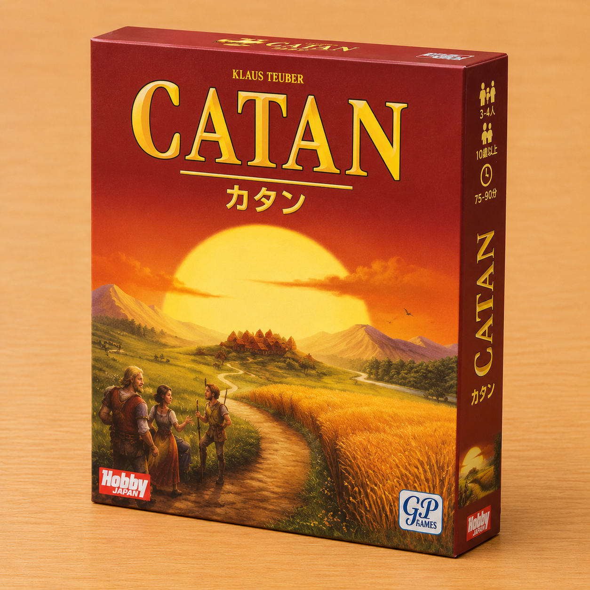

カタン
- プレイ人数 3 - 4 人
- プレイ時間 60 - 90 分
- 難 易 度 ★★★★☆
無人島「カタン」を舞台に、拠点となる開拓地を広げ、島全体の覇権を競う開拓シミュレーションゲーム。サイコロの目によって開拓地から「木材」や「レンガ」などの資源が産出され、それを使って道路を伸ばし、都市へと発展させていきます。資源が偏ったときは、他のプレイヤーと直接交渉して交換することも可能。戦略を練り、最初に10ポイント（勝利点）を先取したプレイヤーが勝者となります。
ゲーム一覧に戻るスタッフのおすすめポイントボードゲームの面白さがすべて詰まった、まさに「王様」と呼ぶにふさわしい名作です！最大の見どころはプレイヤー同士の「交渉」。「誰か羊と鉄を交換しませんか？」といった会話から生まれる駆け引きや、サイコロの出目に一喜一憂する一体感がたまりません。ルールは少し覚えることが多いですが、遊び始めると1時間以上がアッという間に過ぎてしまうほどのめり込めます。お酒を片手にじっくり知的な勝負を楽しみたい夜に、最高のチョイスです！